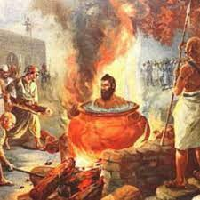
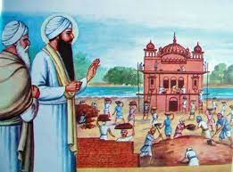
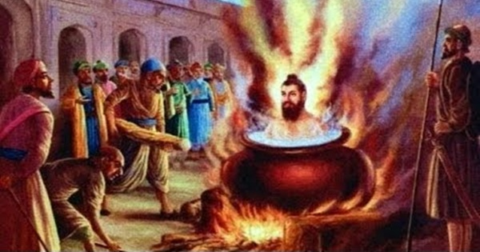

Sri Guru Arjan Dev Ji, the youngest son of Sri Guru Ramdas Ji and Mata Bhani Ji, was born on April 15, 1563, at Goindwal Sahib. He learned Gurmukhi script and Gurbani from Baba Budha ji and was educated in Persian, Hindi, and Sanskrit languages. He had two elder brothers, Prithi Chand ji and Mahadev ji, but (Guru) Arjan Dev Ji was known for his sweetness, humility, devotion, and sacrifice. At the age of 18, his father installed him as the Fifth Nanak. He married Mata Ganga ji and had a son (Guru) Hargobind Sahib Ji. Sri Guru Arjan Dev Ji completed the work on two sacred tanks (Sarovars) - Santokhsar and Amritsar - and got the foundation stone of Harmandir Sahib laid by a Muslim Saint Hazrat Mian Mir Ji of Lahore in December 1588. After the completion of Sri Harmandir Sahib, Guru Sahib completed the construction of Santokhsar. He also founded the town of Tarn Taran Sahib near Goindwal Sahib and built a large tank and Gurdwara there, along with a house for lepers. Guru Sahib laid the foundation stone of the town Kartarpur in the Doaba region and constructed a Baoli in Dabbi-Bazar of Lahore, which was later destroyed by Shah Jahan to build a mosque but was re-excavated by Maharaja Ranjit Singh. Sri Guru Arjan Dev Ji also established another town, Hargobindpur, on the river Beas and sunk a big well for irrigation at Chheharta, a few miles away from Amritsar.
Sri Guru Arjan Dev Ji was a dynamic and ambitious personality who traveled extensively throughout India for about five years to strengthen the cult of Sikhism. During his travels, he even stayed at Wadali, now known as Guru-Di-Wadali near Amritsar city. To expand and solidify Sikhism, Sri Guru Arjan Dev Ji undertook a monumental work. He collected the hymns of the first four Guru Sahibs, as well as those of several other Hindu and Muslim Saints, and compiled them to create Sri Guru Granth Sahib Ji, which was written by Bhai Gurdas Ji. Guru Sahib himself contributed about 2000 verses to it. He installed the Granth Sahib at Sri Harmandir Sahib on Bhadon Sudi 1st Samvat 1661 (August/September 1604) and appointed Baba Budha Ji as the first Granthi.
Sri Guru Granth Sahib Ji proved to be a significant milestone in the history of the Sikh nation. It created a sense of religious distinction from both Hindus and Muslims, and Sikhism began to develop as a distinct religion. Once, Emperor Akbar was misled about the contents of Sri Guru Granth Sahib Ji by Sri Guru Arjan Dev Ji's enemies. However, upon finding nothing objectionable, Emperor Akbar assessed Sri Guru Granth Sahib Ji as "The greatest Granth of synthesis, worthy of reverence." During the time of Sri Guru Arjan Dev Ji, Amritsar city became the central institution where all the Sikhs used to gather annually on Baisakhi. Additionally, the Massands began to deposit the collected offerings from different parts of India in Guru Sahib's treasury.
Guru Arjan Dev Ji was born to Bibi Bhani and Jetha Sodhi in Goindval. Bibi Bhani was the daughter of Guru Amar Das Ji, and Jetha Sodhi later became known as Guru Ram Das Ji. Guru Arjan Dev Ji had two brothers, Prithi Chand and Mahadev. Although various Sikh chroniclers give his birth year as 1553 or 1563, scholarly consensus accepts the latter as the actual year of his birth, with 15 April as the accepted birth date. He spent the first 11 years of his life in Goindwal and the next seven years with his father in Ramdaspur. As per Sikh tradition, he had stayed in Lahore for two years during his youth after being sent by his father to attend the wedding of his first cousin Sahari Mal's son and establish a Sikh congregation. He was appointed as the Sikh Guru in 1581 after the death of his father, Guru Ram Das Ji, who was a Khatri of the Sodhi sub-caste. The Guruship remained in the Sodhi family of Guru Ram Das Ji with Guru Arjan Dev Ji's succession.
As per Sikh tradition, Guru Arjan Dev Ji undertook the compilation of the Adi Granth by collecting hymns of the past Gurus from various sources. He excluded hymns that he deemed fake or deviating from the teachings of the Gurus. His approved collection included hymns from the first four Gurus of Sikhism, those he composed, as well as works of 17 Hindu bards and 2 Muslim bards. The compilation was completed on August 30, 1604, according to Sikh tradition and installed in the Harmandir Sahib temple in September of the same year.
Guru Arjan Dev Ji was a highly skilled poet who composed a remarkable 2,218 hymns. His hymns account for more than half of the total volume of Guru Granth Sahib Ji and represent the largest collection of hymns attributed to a single Guru. According to scholars Christopher Shackle and Arvind-Pal Singh Mandair, Guru Arjan's compositions are characterized by their spiritual depth and breadth, as well as their sophisticated language and extensive use of Braj Bhasha forms and learned Sanskrit vocabulary.
After Guru Arjan Dev Ji completed and installed the Adi Granth in the Harimandir Sahib, some people informed Emperor Akbar of the development, falsely alleging that it contained teachings hostile to Islam. The emperor ordered a copy to be brought to him. Guru Arjan Dev Ji sent him a copy on a plate (thali), with the following message that was later added to the expanded text:
The Akbarnama by Abu'l-Fazl Allami mentions that Guru Arjan Dev Ji met the Mughal emperor Akbar and his court in 1598. According to Louis Fenech, this meeting likely influenced the development of Sikh manuscriptology and the later martial tradition.
After Guru Ram Das Ji , a dispute arose within the Sikh community regarding the authenticity of new hymns claimed to have been composed by Guru Nanak Dev Ji. The faction led by Guru Arjan Dev Ji believed that these hymns were fake and distorted, with some accusing Prithi Chand and his followers of composing and circulating them. Concerned about the possibility of false propaganda, immoral teachings, and inauthentic scriptures, Guru Arjan Dev Ji took the initiative to collect, study, approve and compile an official written scripture, which he called the Adi Granth. The first edition of the Sikh scripture was completed by 1604.
The hymns composed by both Prithi Chand and his followers have been preserved in the Mina texts of Sikhism. However, the mainstream and larger Sikh tradition adopted the Guru Granth Sahib Ji scripture that ultimately emerged from the initiative of Guru Arjan Dev ji.
One of the most significant accomplishments of Guru Arjan Dev Ji was the preparation of the Holy Book, known as the Guru Granth Sahib. He had three primary objectives in mind when initiating the compilation of this book. The first was to safeguard the original hymns and teachings of the first four Gurus, which were being added to and distorted by impostors. The second objective was to ensure that the path established by his predecessors remained intact. Finally, he wanted to provide the Panth (the Sikh community) with an enduring source of spiritual and physical guidance.
Guru Arjan Dev Ji recognized the need to preserve the original teachings and hymns of the first four Gurus. He observed that impostors were adding and changing the content, which was a cause for concern. Therefore, he took it upon himself to compile these original treasures into a single book, which would serve as a timeless source of inspiration and guidance for future generations.
By compiling the Guru Granth Sahib Ji, Guru Arjan Dev Ji not only preserved the teachings of his predecessors but also established a permanent source of spiritual guidance for the Panth. This book became a guiding light for Sikhs, providing them with a path to follow in their daily lives. It was also an important physical and spiritual phenomenon that would forever remain a cornerstone of Sikhism.
In summary, the compilation of the Holy Book by Guru Arjan Dev Ji was a significant achievement that ensured the preservation of the original teachings and hymns of the first four Gurus. It also provided the Panth with an enduring source of spiritual and physical guidance, which continues to inspire and guide Sikhs around the world to this day.
Guru Arjan Dev Ji had a strong desire to establish the Sikh religion as a casteless and secular society. To this end, he compiled the Guru Granth Sahib, incorporating his own compositions, as well as the works of other spiritual leaders from diverse backgrounds, such as Sheikh Farid, Bhagat Kabir, Bhagat Ravi Das, Dhanna Namdev, Ramannand, Jai Dev, Trilochan, Beni, Pipa, and Surdas. This collection of hymns and teachings aimed to promote unity among people of different castes, beliefs, and sects.
The poetic revelations of Guru Arjan Dev Ji are of exceptional aesthetic quality, with over half of the Guru Granth Sahib comprising his own holy renderings. In addition to being a spiritual guide, the Guru Granth Sahib sheds light on contemporary political and social issues, seamlessly blending physical and spiritual awareness.
In addition to his contributions to the Guru Granth Sahib Ji, Guru Arjan Dev Ji established new cities, such as Kartarpur and Tarn Taran, and constructed the Baoli at Lahore, which was a significant accomplishment in its own right.
Overall, Guru Arjan Dev Ji's efforts to establish a casteless and secular society, his contributions to the Guru Granth Sahib, and his achievements in city-building and construction have had a profound and lasting impact on Sikhism and continue to inspire people today.
Guru Arjan Dev Ji passed away while in Mughal custody, which has become one of the most significant and contentious events in Sikh history. The execution of Guru Arjan Dev Ji has been a subject of debate among Mughal historians. Many of them consider it to be a political event, citing the rising influence of the Sikhs as a social group and the active involvement of Sikh Gurus in Punjabi political conflicts.
Another theory, which emerged in the early 20th century, suggests that the execution was a politically motivated single incident. According to this theory, there was an ongoing Mughal dynasty dispute between Jahangir and his son Khusrau, who was suspected of rebellion by Jahangir. Guru Arjan Dev Ji blessed Khusrau, who was on the losing side, and Jahangir became jealous and outraged, ordering the Guru's execution.
However, according to Jahangir's own autobiography, he may not have fully understood the significance of Sikh Gurus. He referred to Guru Arjan Dev Ji as a Hindu who had "captured many of the simple-hearted of the Hindus and even of the ignorant and foolish followers of Islam, by his ways and manners...for the three or four generations(of spiritual successors) they had kept this shop warm." This suggests that the execution of Guru Arjan Dev Ji was not based on any political dispute but rather on Jahangir's lack of understanding and intolerance towards Sikhism.
This event stands in stark contrast to Jahangir's otherwise tolerant attitude towards other religions such as Hinduism and Christianity. Nonetheless, the execution of Guru Arjan Dev Ji remains a defining moment in Sikh history and continues to be remembered and commemorated by Sikhs around the world.
The Sikh tradition offers a different perspective on the execution of Guru Arjan Dev Ji. According to this view, the Guru's execution was part of the ongoing persecution of the Sikh community by Islamic authorities in the Mughal Empire. The rulers of Punjab were alarmed at the growing influence of the Sikh Panth, and they saw the Guru as a threat.
Jahangir's autobiography, Tuzk-e-Jahangiri (Jahangirnama), discusses Guru Arjan's support for his rebellious son Khusrau Mirza. The Mughal emperor believed that too many people were being persuaded by the Guru's teachings, and that if he did not convert to Islam, the Sikh Panth would have to be extinguished.
Guru Arjan Dev Ji, who was sent to Lahore to represent his father at a wedding, ended up staying there for an extended period of time due to the cunning manipulations of his elder brother, Prithi Chand. Prithi Chand had long desired to inherit the Guru Gaddi (Throne) for himself, and he intercepted and hid a series of letters that Guru Arjan Dev Ji had sent to their father.
However, when Prithi Chand's deceit was eventually uncovered, Guru Arjan Dev Ji was installed as the fifth Guru of the Sikh community. This is recorded in the Sikh scripture, Majh M.5 G.G.S. on page 96.
Despite his brother's manipulations, Guru Arjan Dev Ji harbored no resentment towards his elder brother and instead showed him great respect and honor. Guru Arjan Dev Ji was a natural peacemaker, and even though he became the fifth Guru of the Sikh community at the young age of 18, he possessed an exceptional level of wisdom and angelic qualities.
The letters he wrote to his father from Lahore, when he was not even a teenager, are a testament to his remarkable qualities.
Guru Arjan Dev Ji got married to Mata Ganga Ji on June 19, 1589. Mata Ji was the daughter of Bhai Krishan Chand, who hailed from the village of Mau, located about 10 km west of Phillaur in the state of Punjab, India. The village of Doaba (Bilga), which is now a famous historical town, was where the fifth Sikh Guru arrived a day prior to the wedding. He stayed there for two days to rest before proceeding to the village of Mau Sahib for the wedding ceremony.
The village, which has now become a town, is renowned for keeping the holy clothes of Guru Arjan Dev ji in memory of his wedding. The people of Bilga served the Guru with great dedication and sincerity, which pleased and blessed Guru Ji. Gurdwara Bilga Sahib was built in honor of the Guru's visit. Before his departure, the Guru presented his personal items of clothing, including a Saili (cap), chola, pyjama, Batva, Dushala, Simrana Mala, and Chandan ki chawanki, after taking a bath.
Every year, a three-day grand fair is held here to commemorate the marriage of Guru Arjan Dev Ji and Mata Ganga ji. On the last day of the celebration, the holy clothes of Guru Sahib are displayed to the general public before the closing ceremony of Diwan.
The new religion, founded by Baba Nanak, was further developed by three of his successors. However, it was Guru Arjan Dev Ji who undertook the mission of strengthening it. Following the orders of his predecessors, from Guru Nanak Dev Ji to Guru Ram Das Ji, he took on the responsibility of completing the construction of the tank of Nectar, which his father had initiated. In keeping with the spirit of "I am neither Hindu, nor Muslim..." Guru Arjan Dev Ji invited Mian Mir, a Muslim saint from Lahore, to lay the cornerstone of the foundation of the Harmandar, which is now known as the Golden Temple. The temple had doors on all four sides, symbolizing its acceptance of all four castes and every religion. Despite the congregation's requests, the floor of the Harmandar Saheb was kept lower than the surrounding area, as the water flows downward, so do the seekers of God's blessings. With the construction of God's House came the development of the City of Amritsar, complete with its own reverence, amenities, and festivities.
Guru Arjan Dev Ji invited Mian Mir, a Muslim saint from Lahore, to lay the cornerstone of the foundation of the Harmandar, which is now known as the Golden Temple. The temple had doors on all four sides, symbolizing its acceptance of all four castes and every religion. Despite the congregation's requests, the floor of the Harmandar Saheb was kept lower than the surrounding area, as the water flows downward, so do the seekers of God's blessings. With the construction of God's House came the development of the City of Amritsar, complete with its own reverence, amenities, and festivities.
After the death of Akbar, the Muslim clergy influenced Prince Saleem and helped him regain the throne as Emperor Jahangir. They did so on the condition that he would reinstate the Shariyat (Orthodox Muslim Law) in the country when he became Emperor.
Khusro, Akbar's grandson, was a pious man who shared his grandfather's liberal beliefs. Akbar had designated him as the next in line to rule the kingdom. However, due to the influence of the Muslim clergy, Khusro had to flee for his life. While passing through Punjab, he visited Guru Arjan Dev Ji at Tarn Taran and sought his blessings.
Khusro, who was designated to be the next in line to head the kingdom by Akbar, had to flee for his life due to the domination of the Muslim clergy. During his escape, he sought the blessings of Guru Arjan Dev Ji at Tarn Taran. However, Khusro was later captured and punished with blinding.
Subsequently, Emperor Jehangir summoned Guru Arjan Dev Ji to Lahore, accusing him of aiding Khusro's rebellion. Despite the Guru's explanation, Jehangir was dissatisfied and wanted to sentence him to death. However, on the recommendation of Pir Mian Mir, the sentence was commuted to a fine of two lakh rupees and an order to erase certain verses from the Granth Sahib. The Guru refused to accept this unjust punishment, and the Sikhs of Lahore offered to pay the fine, but he refused their assistance.
Guru Arjan Dev Ji was subjected to extreme torture and imprisonment. He was exposed to the blazing sun in the hot months of May and June. The tormentors made him sit on hot sand and poured boiling water on his naked body.
During this time, Pir Mian Mir came to him and offered to intercede on his behalf. It is said that he even offered to use his spiritual power to destroy the entire city of Lahore in retribution. However, the Guru declined his offer, stating that everything was happening according to God's will, and that he craved only the wealth of God's name.